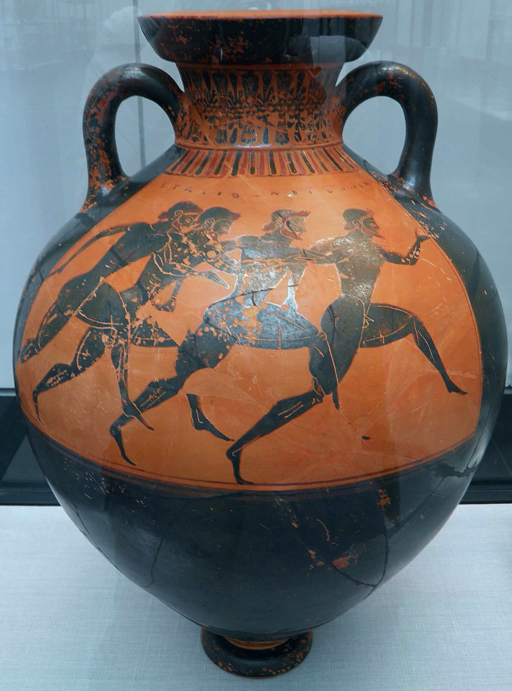
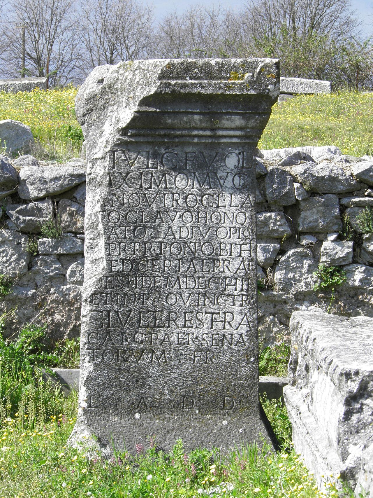
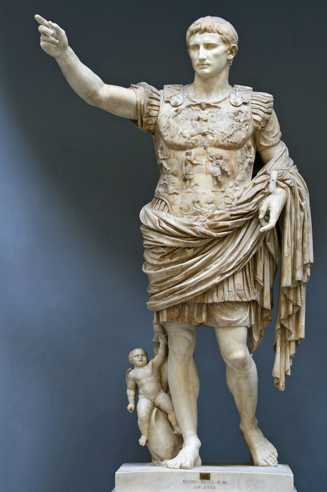
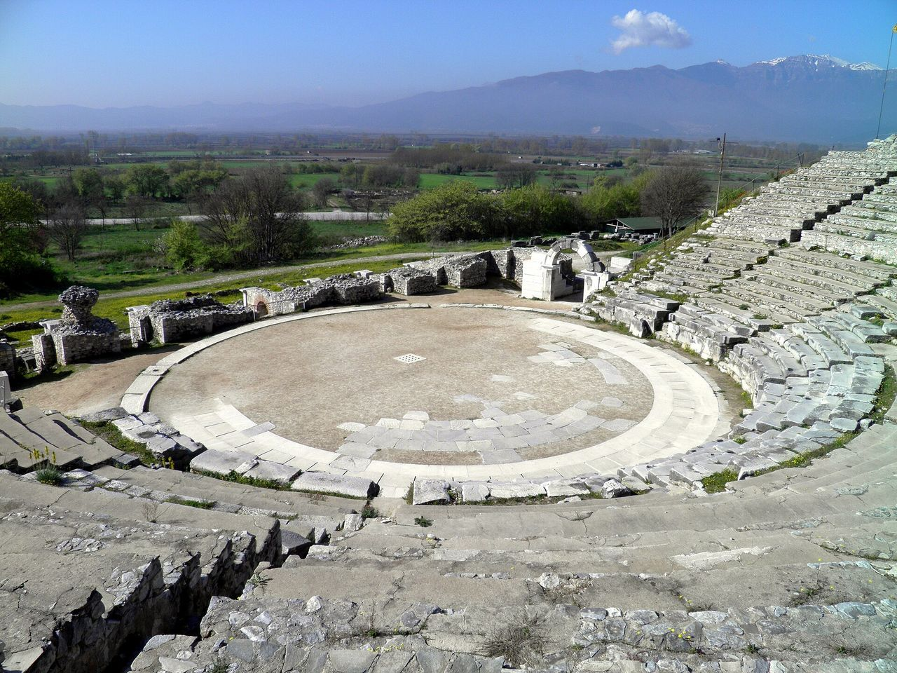

O teatro grego de Filipos, depois reformado pelos romanos

Corredores pintados num vaso grego, por volta de 530 a.C.Estádio antigo de Delfos, na Grécia
EBD Jovens · 15 de novembro de 2026 · Filipenses 3.12 a 21
Lição 7O alvo supremo: conhecer a Cristo
Olhos na linha de chegada
Paulo se descreve como um corredor que ainda não chegou, não olha para trás e não desiste.
Antes da largada
Responda só para você
Existe alguma culpa, fracasso ou decepção do passado que está impedindo meu crescimento espiritual?
Tenho buscado conhecer mais a Cristo por meio da oração e da Palavra?
Quais distrações têm tentado tirar meus olhos do alvo?
Minha vida demonstra que eu pertenço ao Reino de Deus?
Como vamos estudar
Sete trechos
Hoje a aula é uma corrida em sete trechos: o primeiro mostra a pista dos jogos gregos; os outros seguem Filipenses 3.12 a 21, da largada à linha de chegada.
Na lição passada, Paulo jogou o currículo fora para ganhar a Cristo. Agora ele mostra o que faz com a vida: corre atrás desse prêmio.
Revista, Interação: "a caminhada cristã não é uma corrida de velocidade, mas uma jornada de perseverança, disciplina e alvo".
1A pistao cenário
2Ainda não chegueiFp 3.12
3ProssigoFp 3.12 e 14
4Uma coisa façoFp 3.13
5Esquecendo e avançandoFp 3.13 e 14
6Andemos juntosFp 3.15 a 19
7A cidade e o SalvadorFp 3.20 e 21
Corredores pintados num vaso grego, por volta de 530 a.C.
Trecho 1 · A pista · o cenário
A pista
A corrida mais famosa de Olímpia era o "estádio": uma volta numa pista de cerca de 192 metros.
Nas primeiras olimpíadas, era a única prova.
O prêmio: uma coroa de folhas de oliveira, e a fama na sua cidade.
"Eles o fazem para alcançar uma coroa corruptível, nós, porém, uma incorruptível" (1Co 9.25).
Trecho 2 · Ainda não cheguei · Fp 3.12
"Não que já a tenha alcançado"
"Não que já a tenha alcançado ou que seja perfeito; mas prossigo para alcançar aquilo para o que fui também preso por Cristo Jesus."Filipenses 3.12
katalambánō"Alcançar" e "fui preso" são o mesmo verbo: agarrar. Paulo corre para agarrar aquilo para o qual Cristo o agarrou primeiro.
Perfeito × maduroNão é "perfeito", terminado (v. 12), mas está entre os "perfeitos", maduros (v. 15). Maduro é quem sabe que ainda não terminou.
Trecho 3 · Prossigo · Fp 3.12 e 14
Prossigo
Fp 3.6 · antes"Segundo o zelo, perseguidor da igreja." Corria atrás da igreja para destruí-la.
Fp 3.14 · agora"Prossigo para o alvo, pelo prêmio da soberana vocação de Deus em Cristo Jesus."
É o mesmo verbo grego: diṓkō, correr atrás. A mesma energia, agora na direção certa.
Pense!
Deus pode usar quem falha. Mas não usa quem desiste.
Pedro negou Jesus três vezes e "chorou amargamente" (Lc 22.62). Mas voltou, e foi restaurado.
Trecho 3 · Prossigo · Fp 3.12 e 14
O perigo oposto: achar que já chegou
"Conheçamos e prossigamos em conhecer o Senhor."Oseias 6.3
OraçãoAbandonada por quem acha que já sabe orar.
PalavraDeixada de lado por quem acha que já conhece.
ConsagraçãoEsquecida por quem acha que já está pronto.
Trecho 4 · Uma coisa faço · Fp 3.13
"Uma coisa faço"
Davi"Uma coisa pedi ao Senhor e a buscarei: que possa morar na Casa do Senhor todos os dias da minha vida" (Sl 27.4).
Jesus a Marta"Estás ansiosa e afadigada com muitas coisas, mas uma só é necessária" (Lc 10.41 e 42).
Paulo"Uma coisa faço": não era a única, mas a mais importante. Feita essa, o resto se ajeita.
Muitas abas abertas e nenhuma prioridade cansam e não chegam a lugar nenhum.
Trecho 5 · Esquecendo e avançando · Fp 3.13 e 14
"Esquecendo-me das coisas que atrás ficam"
As culpas · Fp 3.6Ele perseguiu a igreja. Se ficasse olhando para isso, não sairia do lugar.
As glórias · Fp 3.5Ele tinha um currículo brilhante. Se ficasse olhando para isso, confiaria na carne de novo.
"Ninguém que lança mão do arado e olha para trás é apto para o Reino de Deus."Lucas 9.62
Trecho 5 · Esquecendo e avançando · Fp 3.13 e 14
Palavras da pista
"...avançando para as que estão diante de mim, prossigo para o alvo, pelo prêmio da soberana vocação de Deus em Cristo Jesus."Filipenses 3.13 e 14
Avançando · epekteínomaiEsticar-se para a frente, como o corredor nos últimos metros. Só aqui no Novo Testamento.
Alvo · skopósA marca para onde o corredor olha. Dela vem a palavra "escopo".
Prêmio · brabeîonO prêmio dos jogos, como em 1Co 9.24.
Trecho 5 · Esquecendo e avançando · Fp 3.13 e 14
O alvo é Cristo
Não éSucesso, cargo, meta pessoal, "chegar ao topo e ficar lá".
ÉConhecer a Cristo, estar com Ele e ser transformado à sua imagem.
"Se o atleta olhar para os lados, se distrairá, perderá a passada, e a queda será a consequência."
Pense!
Por que Paulo usa a metáfora de um atleta para retratar a jornada cristã?
"O atleta vencedor sempre se disciplina [...] não olha para trás, só para o alvo, visando ganhar o prêmio."
Trecho 6 · Andemos juntos · Fp 3.15 a 19
Andemos juntos
"Mas, naquilo a que já chegamos, andemos segundo a mesma regra e sintamos o mesmo. Sede também meus imitadores, irmãos."Filipenses 3.16 e 17
Andemos · stoichéōAndar em fila, na mesma raia. Os verbos estão no plural: ninguém corre sozinho.
Imitadores · symmimētḗs"Coimitadores": imitar junto com outros. Paulo não pede fãs, pede uma turma que copie o mesmo modelo, Cristo.
Trecho 6 · Andemos juntos · Fp 3.15 a 19
Correndo na direção errada
"Muitos há [...] que são inimigos da cruz de Cristo. O fim deles é a perdição, o deus deles é o ventre, e a glória deles é para confusão deles mesmos, que só pensam nas coisas terrenas."Filipenses 3.18 e 19
O fimPerdição.
O deusOs próprios desejos.
A glóriaO que deveria envergonhar.
A menteSó as coisas daqui.

Inscrição em latim encontrada no fórum
Trecho 7 · A cidade e o Salvador · Fp 3.20 e 21
"A nossa cidade está nos céus"
Filipos era colônia romana, orgulhosa da sua cidadania.
Paulo usou essa cidadania ali: "sendo homens romanos, nos lançaram na prisão" (At 16.37).
"Cidade" é políteuma: cidadania. A palavra só aparece aqui.
Somos estrangeiros e peregrinos aqui: nossa pátria é o céu (Hb 11.13 e 16).

Augusto de Prima Porta, Museus do Vaticano
Trecho 7 · A cidade e o Salvador · Fp 3.20 e 21
O Salvador que vem
"Donde também esperamos o Salvador, o Senhor Jesus Cristo."Filipenses 3.20
"Salvador" (sōtḗr) era um título que o mundo romano dava aos imperadores.
A colônia esperava benefícios de Roma. A igreja espera o seu Senhor do céu.
Trecho 7 · A cidade e o Salvador · Fp 3.20 e 21
O corpo transformado
"Que transformará o nosso corpo abatido, para ser conforme o seu corpo glorioso, segundo o seu eficaz poder de sujeitar também a si todas as coisas."Filipenses 3.21
Abatido · lição 3tapeínōsis, da família de "humilhou-se a si mesmo" (Fp 2.8).
Transformará · lição 6O mesmo verbo dos falsos apóstolos que se "transfiguravam" por fora (2Co 11.13). Cristo transforma de verdade.
Conforme · lições 3 e 6sýmmorphos: a família de morphḗ de novo. "Conformes à imagem de seu Filho" (Rm 8.29).
Professor
"Assim como se sabe o gosto da comida ao comê-la, assim também conhecemos a Cristo ao recebê-lo."
Myer Pearlman · Conhecer a Cristo é diferente de saber sobre Ele.
Para levar
O que do meu passado está me impedindo de avançar?
Deixe no passado o que ficou para trás. Olhos na linha de chegada.
Hora da revisão
Toque na pergunta para ver a resposta
1Qual a metáfora usada por Paulo para descrever sua vida cristã?
A das corridas nos jogos da antiguidade: ele se identifica como um corredor consciente e persistente.
2O que Paulo sintetiza com a expressão "não que já a tenha alcançado"?
A incompletude espiritual de todos nós.
3O que significa a expressão "uma coisa faço"?
Paulo reunia todos os seus esforços no que era mais relevante: não a única coisa, mas a mais importante, que, sendo feita, faria todo o restante dar certo.
4Diante da imperfeição dos cristãos, em quais verbos se concentra a admoestação de Paulo?
"Andemos" e "sintamos".
5Como atingir o propósito de chegar à "cidade celestial"?
Mantendo constantemente os olhos no Céu, nosso alvo.

Para levar para casa
"Prossigo para o alvo, pelo prêmio da soberana vocação de Deus em Cristo Jesus."Filipenses 3.14
Na Expedição Filipos: Parada 7 e a página "Olhos na linha de chegada", para ler com calma.
De onde veio tudo isso
Fontes
Revista Lições Bíblicas Jovens, 4º trimestre de 2026, Lição 7 (CPAD)
Bíblia Sagrada, Almeida Revista e Corrigida (ARC)
Comentário Bíblico da Mulher: Novo Testamento, v. II (CPAD, 2025)
Bíblia de Estudo Pentecostal, Edição Global (CPAD, 2024)
Myer Pearlman, Epístolas Paulinas (CPAD, 2017)
World History Encyclopedia: Stadium; Gordon Franz: The Isthmian Games; Encyclopedia of the Bible: Citizenship